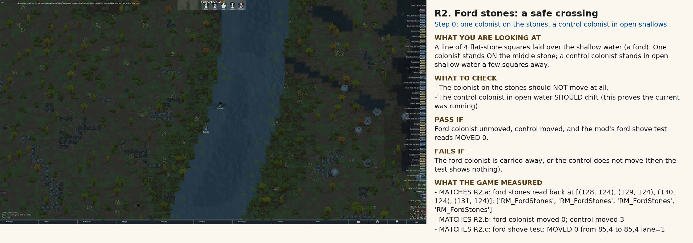

Each scene has caption panels (what you look at, what to check, pass/fail, what the game measured). Tick your answer under each scene; 'Copy my answers as JSON' puts them on the clipboard.
What you are looking at. A line of 4 flat-stone squares laid over the shallow water (a ford). One colonist stands ON the middle stone; a control colonist stands in open shallow water a few squares away.
What to check
Pass if: Ford colonist unmoved, control moved, and the mod's ford shove test reads MOVED 0.
Fails if: The ford colonist is carried away, or the control does not move (then the test shows nothing).
What the game measured
| MATCHES | R2.a: ford stones read back at [(128, 124), (129, 124), (130, 124), (131, 124)]: ['RM_FordStones', 'RM_FordStones', 'RM_FordStones', 'RM_FordStones'] |
| MATCHES | R2.b: ford colonist moved 0; control moved 3 |
| MATCHES | R2.c: ford shove test: MOVED 0 from 85,4 to 85,4 lane=1 |

R2: note: